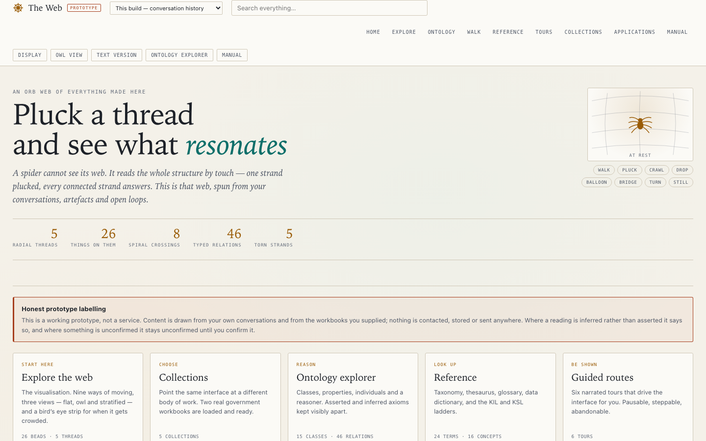
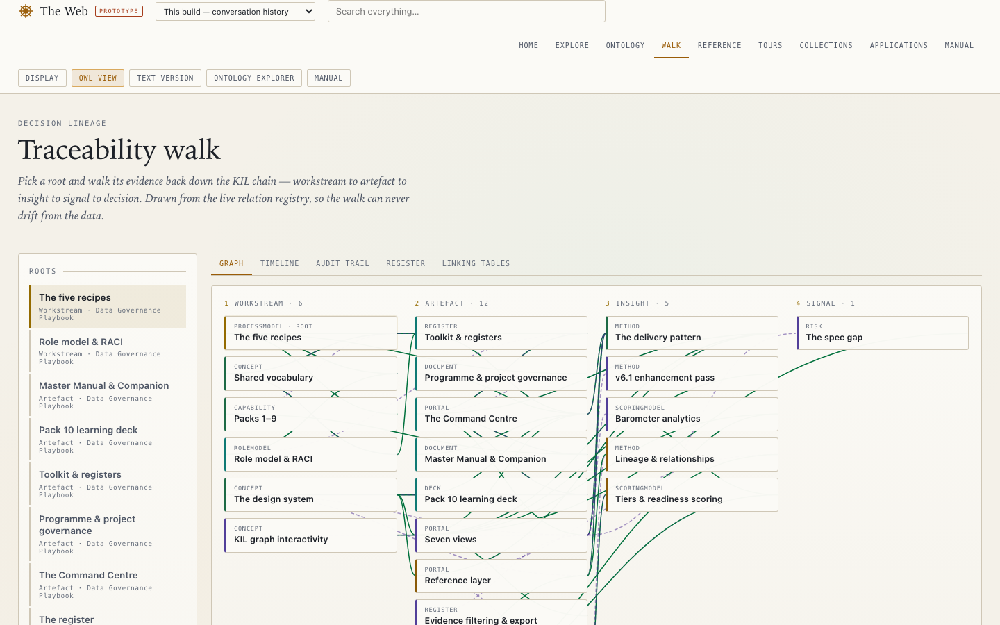
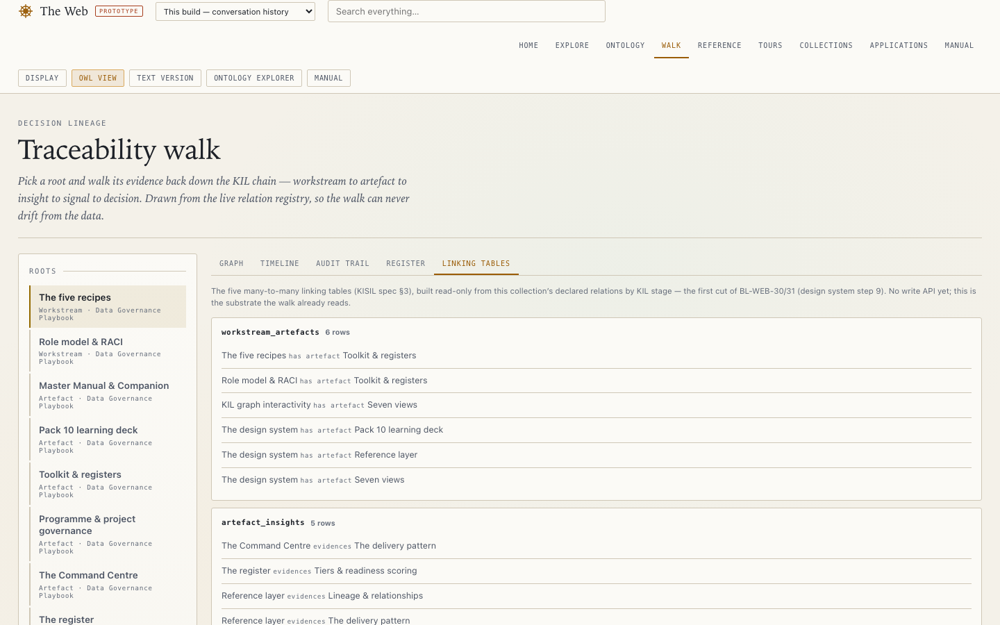
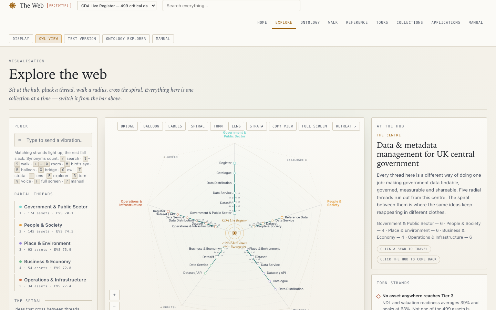
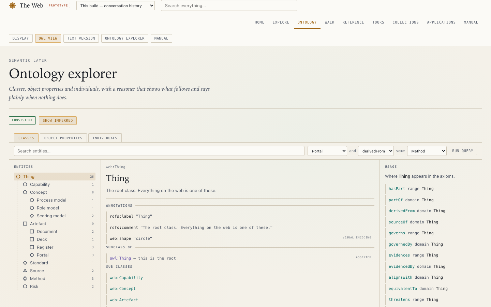

Where knowledge, evidence and decisions connect — and where they honestly don't, yet.
Emanuel Silva · prototype · not a service · not signed off
A single web page — no install, works offline — that turns a body of work into something you can walk through: what exists, how it connects, and what's still missing. Six real bodies of work are loaded into it already.

This isn't drawn by hand. Every chain here is generated live from the real relationships in the data — workstream, evidence, insight, decision — so it can't drift from what's actually true.

Most tools hide the mess. This one names it: which connections are solid, and which ones are real but don't fit the tidy model yet. Nothing gets quietly dropped.

Already loaded, already explorable. This wasn't built to look convincing — it was built to hold up against a real register, with its real gaps and messiness intact.

Every item has a type, and every type has rules about what it can connect to. That's what makes the connections trustworthy instead of decorative.

| If you... | Start here |
|---|---|
| Write submissions or need to defend a decision | The evidence chain — Walk |
| Work with data standards or registers | A real 499-asset register — Collections |
| Track machinery-of-government or institutional change | Declared gaps, named not hidden — Explore |
| Sit in governance or assurance | What fits the model and what doesn't — Linking tables |
Not sign-off. Not adoption.
Just — does any of this already connect to what you're working on?
Or is there a gap here you can see that I can't?
1Open the-web.html in any browser — no install.
2Click Tours → "For colleagues" — six minutes, narrated.
3Tell me what you spot.
the-web · prototype · AMBER by design